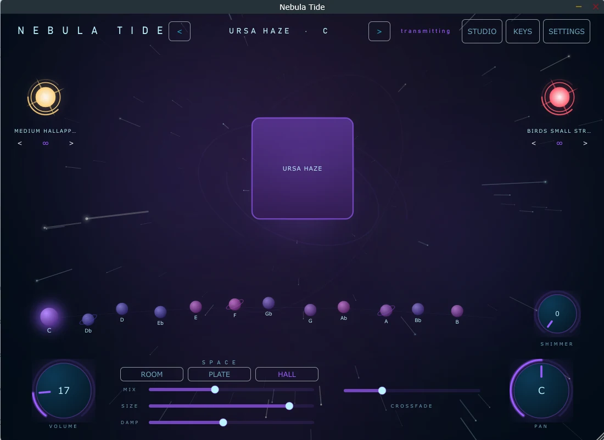
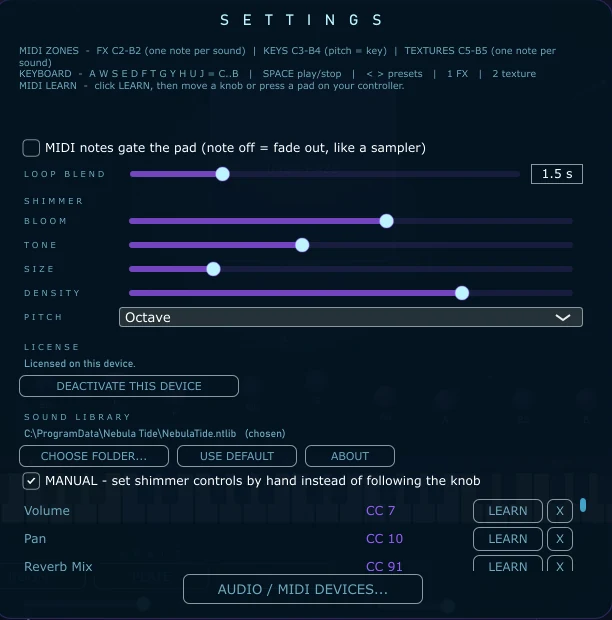
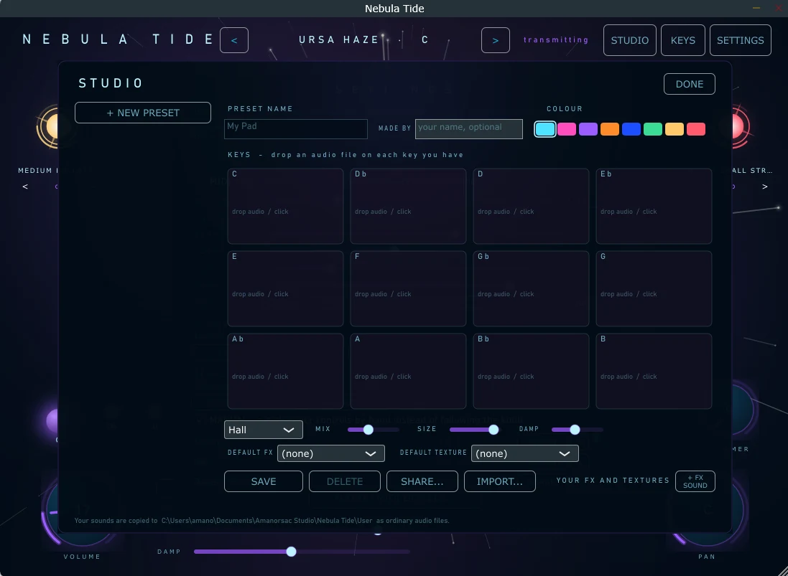
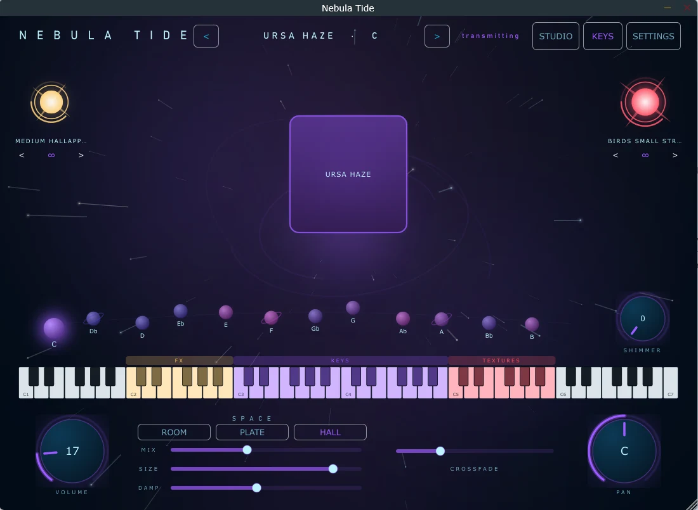

Version 1 gave you a pad. Version 2 gives you somewhere to put it. A shimmer the pads run through, your own presets built inside the app, and a drag that lands a MIDI clip on your timeline. The twelve real key recordings underneath are exactly as they were.
From $5, $29 suggested · one purchase covers two machines · Windows & macOS · installs through Amanorsac Hub

Everything that made Nebula Tide worth opening is untouched: real recordings in all twelve keys, never pitch-shifted, looping without a seam. What is new is depth, ownership and reach.
Shimmer · the hero
Most shimmer plugins put the effect alongside the sound, so the pad and the shimmer arrive as two separate things sitting next to each other. Nebula Tide puts it in the path. The pad goes in, the shimmer comes out, and what you hear is one sound that grows rather than two sounds stacked.
One control does the work. At the bottom of its travel it is a hint of air. At the top it is a room with no ceiling. Turning it moves five things at once, each on its own curve: how much, how close, how bright, how dense, and how far it regenerates. A full set of controls waits in Settings for anyone who wants them, and nobody has to touch them.
The pitch shifting is splice-aligned rather than fixed-interval — the difference between a shimmer that sounds smooth and one that sounds granular.

Studio
Twelve slots, one per key. Drop your own recordings onto the key you recorded them in and the slot fills. Name it, save it, give it a colour, and it appears on the stage beside the presets we made. No folder structure to learn, no manifest to write, no restart. Share a preset with someone else and they import it in one click.

Timeline
Drag from the app onto a DAW track and a MIDI clip lands, already in the right key. The clip carries the pad on one channel and the effects and textures on another, so a single drag reproduces what you were just hearing.
Playable
The keyboard splits into three: effects low down, the twelve keys in the middle, textures at the top. One note plays a sound, the pitch picks the key, and the zones are drawn on screen so you can see where you are. Any knob can be learned to a controller — press learn, move the knob, done.

The installer shows you the path before it writes anything and lets you change it. Settings has the same control afterwards, so the library can move to another drive without a reinstall.
The recordings ship in a single encrypted container and are never written to disk in the clear. Invisible if you bought it. The reason it can stay a product rather than a folder of files.
One purchase covers the studio machine and the one that travels. Move a seat yourself, from the app or from your account here. No support ticket, no waiting.
Version, credits and licences, one click from Settings. Small, and the first thing you want when something needs reporting.
Windows and macOS ship the sound library with the app. The mobile builds download it on first launch, so the store download stays small — same instrument, same presets, same sound.
Windows 10 and 11, 64-bit. Standalone and VST3.
macOS 11 and later, Apple silicon and Intel.
Built and being tested. It appears here the day the build is ready to hand out, not before.
In build. They arrive as App Store releases, and this page will say so the day they do.
If you have version 1, none of what you already like about it has moved.
Version 1 is not going anywhere. It stays free, it stays downloadable, and it keeps working. See version 1 →
You
choose
Anything from $5 to $100, and $29 is what I would ask if I were asking. Whatever you pay, you get the same thing: one license key covering the studio machine and the one that travels, a seat you can move yourself, and a year of updates. The version you have keeps working after that.
If money is the thing stopping you, pay the five. I would rather it was being played.
From people who use it
Be the first to leave one.
It goes up once I've actually read it — usually within a day or two.
The pads you know, a shimmer they run through, and twelve slots waiting for your own recordings.
From $5 · one purchase covers two machines · installs through Amanorsac Hub